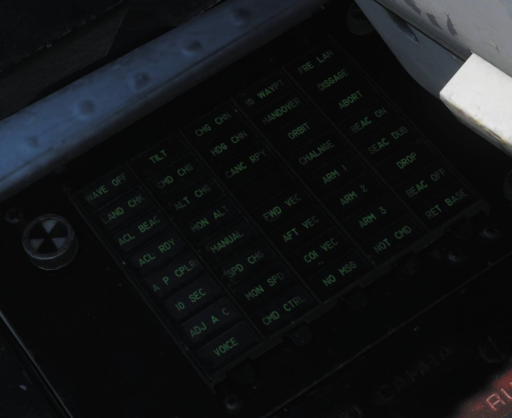
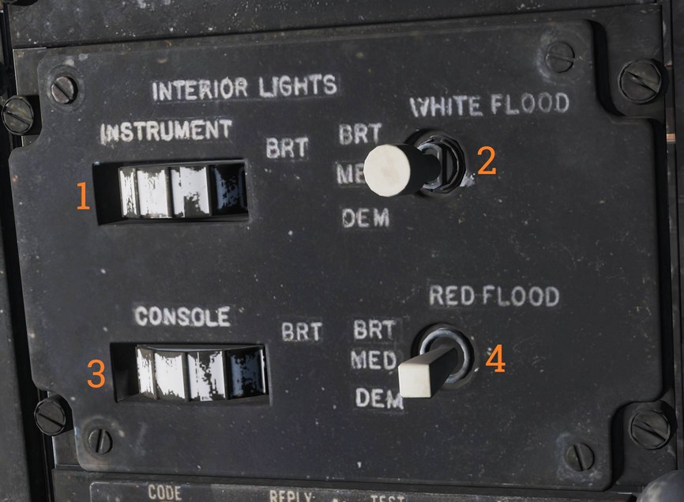
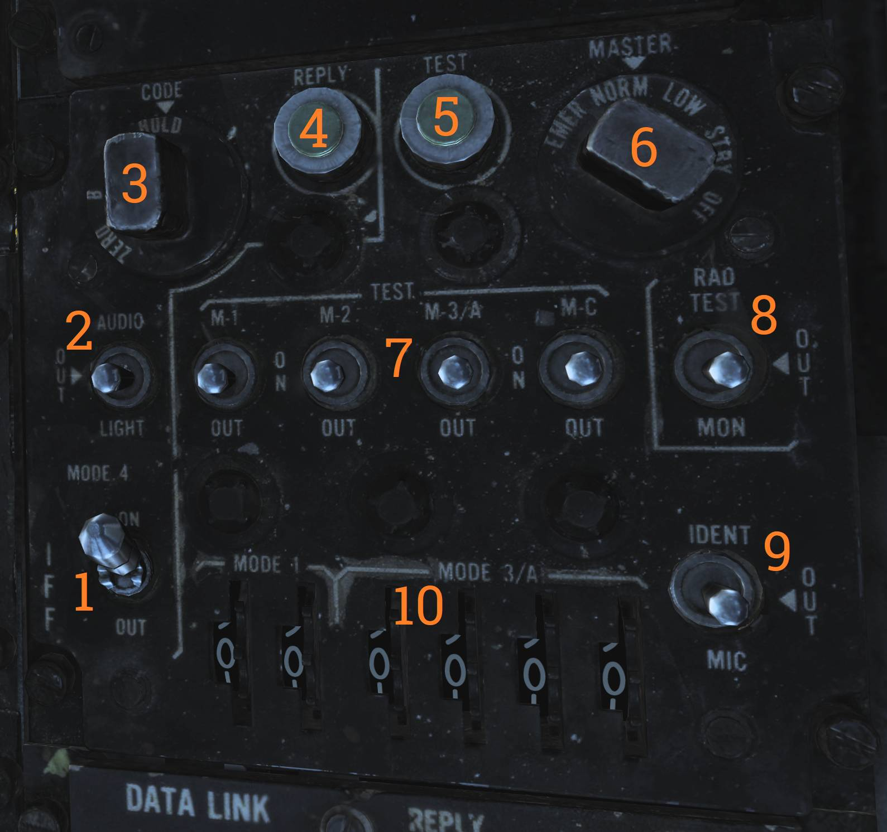

Right Side Console
Radar Warning Receiver Panel

Control panel for the ALR-67 radar warning receiver.
Power Switch
The PWR switch (
Display Type Selector
The DISPLAY TYPE selector (
Mode Switch
The MODE switch (
It can be held to the following momentary positions:
- OFST - Enables offset display while held.
- LMT - Enables limited display while held.
Test Switch
The TEST switch (
- BIT - Momentary selection initiates ALR-67 BIT.
- SPL - While BIT page 1 is displayed, holding SPL displays the special BIT status page while held and for three seconds after release.
Volume Knob
The VOL knob (
Digital Data Indicator (DDI)

Digital data indicator used to display commands received via the data link.
| Indicator | Function |
|---|---|
| AFT VEC | Aircraft is being vectored to approach target from the rear hemisphere. |
| COL VEC | Aircraft is being vectored on a collision course to target. |
| NO MSG | No message at this time, indicates presence of data link communication while not receiving a command. |
| TO WAY PT | Proceed to the point being indicated by target information. |
| HANDOVER | TDS is handing own aircraft over to another control center. |
| ORBIT | Assume orbit at present position maintaining maximum endurance. |
| CHALNGE | Intercept and visually identify the target. |
| ARM 1 | Intercept and destroy the indicated hostile target using AIM-54. |
| ARM 2 | Intercept and destroy the indicated hostile target using AIM-7. |
| ARM 3 | Intercept and destroy the indicated hostile target using AIM-9. |
| NOT CMD | Ignore currently received heading, speed, and altitude. Also means valid command BIT not yet available. |
| FRE LAN | Free to attack the most suitable target. |
| DIS’GAGE | Cease fire. |
| ABORT | Abort action. |
| BEAC ON | Enable APN-154 tracking beacon. |
| BEAC DUB | Set APN-154 to double-pulse mode. |
| DROP | Command to release a weapon in data link A/G attack, manually or automatically if in data link attack mode. |
| BEAC OFF | Turn off APN-154 tracking beacon. |
| RET BASE | Return to the indicated home base. |
| WAVE OFF | Wave off, automatic AFCS disengagement. |
| LAND CHECK | CATCC has a data link channel available for AFCS, complete landing checklist. |
| ACL BEAC | Directed by carrier to enable APN-154 beacon. |
| ACL RDY | ACL has locked onto aircraft APN-154 beacon and is transmitting zero pitch and bank signals. Glideslope information is now available to the pilot. |
| A/P CPLR | ACL is ready to take control of the aircraft for the ACL approach, autopilot should be engaged. |
| 10 SEC | Indicates 10 seconds to the next action or waypoint. In ACL indicates that the ship's motion is taken into account for ACL. |
| ADJ A/C | Indication from the control station of another aircraft near own aircraft. |
| VOICE | Indicates ACL not available, switch to voice procedures. |
| TILT | Indicates no data link message received in the last 10 seconds. In ACL indicates no messages in the last 2 seconds, will disengage AFCS. |
| CMD CHG | Indicates imminent or recently changed command instructions. |
| ALT CHG | Indicates imminent or recently changed altitude command. |
| MON ALT | Message indicating altitude command not being followed with enough precision. |
| MANUAL | Indicates autopilot should not be engaged. |
| SPD CHG | Indicates imminent or recently changed speed command. |
| MON SPD | Message indicating speed command not being followed with enough precision. |
| CMD CTRL | Indicates aircraft under data link control for landing. |
| CHG CHN | Command to change data link channel. |
| HDG CHN | Indicates imminent or recently changed heading command. |
| CANC RPY | TDS has canceled reply messages. |
| FWD VEC | Aircraft is being vectored to approach the target from the front hemisphere. |
💡 The majority of the DDI lights depend on data link reply messages not currently modelled in DCS.
DECM Control Panel

Control panel for the AN/ALQ-126 DECM jammer.
Standby Light
The STANDBY light (
The light extinguishes after warm-up. Illumination during test or operation indicates a fault.
DECM Selector
The DECM selector (
Selectable modes are:
- OFF - Removes power from the AN/ALQ-126.
- STBY - Standby warm-up mode.
- TEST/HOLD 3 SEC - Hold for three seconds to arm the system test.
- TEST/ACT - Initiates AN/ALQ-126 BIT after the TEST/HOLD 3 SEC step.
- REC - Receive and analyze threat signals. Missile launch detection may force the system into repeat.
- RPT - Repeat mode, transmits programmed responses to detected threats.
Audio Knob
The AUDIO knob (
Data Link Control Panel

Control panel for data link operation.
Transmission Mode Switch
The transmission mode switch (
- TEST - Initiates system test.
- NORM - Normal operational mode.
- A/J - Anti-jam transmission mode.
Frequency Select Wheels
The frequency select thumbwheels (
Data Link Power Switch
The data link power switch (
Data Link Reply and Antenna Control Panel

Panel controlling data link alignment, reply, and antenna selection.
Antenna Switch
The ANTENNA switch (
Reply Switch
The REPLY switch (
- NORM - Reply transmission enabled.
- CANC - Reply transmission disabled (cancelled).
Datalink Mode Switch
The MODE switch (
- CAINS/WAYPT - Enables data link alignment and waypoint update.
- TAC - Enables manual frequency selection and stops alignment/waypoint update.
Address Thumbwheel
The ADDRESS thumbwheel (
This sets the two least-significant digits; remaining digits are set by ground crew.
AN/ALE-39 Control Panel

Controls countermeasure dispensing and operating modes for the AN/ALE-39.
Inventory Counters
The inventory counters (
Counters are manually set by pushing in and rotating the knob beneath each counter.
Power and Mode Switch
The PWR/MODE switch (
- AUTO(CHAFF)/MAN - Enables manual dispensing and automatic chaff dispensing via ECM threat detection.
- MAN - Manual dispensing only.
- OFF - System off.
Salvo Flares Switch
The SALVO FLARES switch (
The switch must be lifted to move to ON.
Flare Mode Switch
The FLARE MODE switch (
- MULT - Each flare command dispenses one flare from each launcher subsection loaded with flares.
- NORM - Each flare command dispenses one flare total.
- PILOT - Pilot DLC button dispenses flares. Other positions cause the pilot DLC button to dispense chaff.
Countermeasure Release Switches
The countermeasure release switches (
- PRGM - Program release. Switch must be lifted to enter PRGM; momentary actuation initiates programmed release.
- STBY - No release.
- SGL - Single release.
AA1 Control Panel

AN/APX-76 interrogator control panel.
💡 Due to DCS limitations in regards to IFF the AA1 control panel is currently non-functional.
M4 Alarm Override Switch
The M4 ALARM OVERRIDE switch (
Test / Challenge CC Switch
The TEST-CHAL CC switch (
- TEST - Momentary actuation interrogates own transponder. With matching codes, two solid lines appear on the DDD at 3 and 4 miles.
- CHAL CC - Momentary actuation starts a 10-second interrogation cycle. Only returns with correct mode and code are displayed on the DDD.
Code Selector Thumbwheels
The CODE selector thumbwheels (
The first wheel sets mode, and the last four wheels set code.
Challenge Light
The CHAL light (
Fault Light
The FAULT light (
AN/ALE-39 Programmer

Programming panel used to enter countermeasure programs and inventory into the AN/ALE-39.
Jammer Program Thumbwheels
The JAMR thumbwheels (
- QTY - Quantity of jammers released per program.
- INTV - Interval in seconds between jammer releases.
Chaff Program Thumbwheels
The CHAFF thumbwheels (
- B-QTY - Burst quantity per salvo; may be set to C (continuous) or R (random).
- B-INTV - Burst interval; may be set to R (random).
- S-QTY - Number of salvos in the program.
- S-INTV - Interval between salvos.
Flare Program Thumbwheels
The FLARE thumbwheels (
- QTY - Quantity of flares released per program.
- INTV - Interval between flare releases.
Load Control Thumbwheels
The LOAD control thumbwheels (
- L10 - Left 10 subsection load.
- L20 - Left 20 subsection load.
- R10 - Right 10 subsection load.
- R20 - Right 20 subsection load.
Reset Switch
The RESET switch (
Interior Light Control Panel

Panel controlling RIO cockpit lighting.
Instrument Lighting Thumbwheel
The INSTRUMENT thumbwheel (
- 0 - Off
- 1–14 - Increasing brightness
White Flood Switch
The WHITE FLOOD switch (
DIM and BRT settings are available. The switch is locked to OFF unless pulled out.
Console Lighting Thumbwheel
The CONSOLE thumbwheel (
- 0 - Console and red flood off
- 1–14 - Increasing console brightness
Red Flood Switch
The RED FLOOD switch (
- DIM - Dim red console flood
- MED - Medium red console flood
- BRT - Bright red instrument flood and console lights
Data / ADF Switch

The DATA/ADF switch (
- BOTH - Displays ADF bug and navigation data block.
- DATA - Displays navigation data block only.
- OFF - Disables both.
IFF Transponder Control Panel

Control panel for the AN/APX-72 IFF transponder.
Mode 4 Switch
The MODE 4 switch (
Mode 4 Audio/Light Switch
The MODE 4 AUDIO/LIGHT switch (
- AUDIO - Enables Mode 4 audio monitoring and reply light monitoring.
- OUT - Disables audio and light monitoring.
- LIGHT - Enables reply light monitoring only.
Mode 4 Code Selector
The MODE 4 CODE selector (
- ZERO - Erases both ciphers.
- B - Selects B cipher.
- A - Selects A cipher.
- HOLD - Non-functional.
Mode 4 Reply Light
The MODE 4 REPLY light (
The light can be pressed to test.
Test Light
The TEST light (
The light can be pressed to test illumination.
Master Selector
The MASTER selector (
- OFF - No power.
- STBY - Standby for immediate operation when another mode is selected.
- LOW - Low sensitivity replies; responds only to strong nearby interrogators.
- NORM - Normal reply operation.
- EMER - Emergency replies to Mode 1, 2, and 3/A and normal reply to Mode C, regardless of mode switch settings.
Mode Switches
The MODE switches (
- TEST - Tests the respective mode; correct operation indicated by TEST light.
- ON - Enables the mode.
- OUT - Disables the mode.
Rad Test / Out / Mon Switch
The RAD TEST-OUT-MON switch (
- RAD TEST - Not used by aircrew.
- OUT - Disables test and monitoring.
- MON - Monitors Mode 1, 2, 3, and C by illuminating the TEST light when replies are generated and transmitted.
Ident / Out / Mic Switch
The IDENT-OUT-MIC switch (
- IDENT - Momentary; enables IDENT replies for 15–30 seconds after release.
- OUT - IDENT disabled.
- MIC - Transfers IDENT control to crewmember UHF PTT; IDENT replies occur when PTT is keyed.
Code Thumbwheels
The code thumbwheels (
Six thumbwheels are provided.
IFF Antenna Control / Test Panel

Panel containing IFF antenna selection, BIT controls, and ground cooling control.
IFF Antenna Switch
The IFF ANT switch (
- AUTO - Automatic selection.
- LWR - Forces lower antenna selection.
Indicator Light / DDI BIT Switch
The IND LT/DDI BIT switch (
Ground Cooling Switch
The GND CLG switch (
- OBC/CABIN - External air into cabin and electronics cooling with reduced OBC performance.
- OFF - External air not used.
- AWG-9/AIM-54 - External air used to cool AWG-9/AIM-54 more effectively; disables external cabin air.
Mid Compression Bypass Test Panel (F-14A only)

Panel used to verify Mid Compression Bypass (MCB) circuit functionality.
Left and Right Test Lights
The left and right test lights (
MCB Test Switch
The MCB test switch (
Electrical Power System Test Panel

Ground crew test panel for aircraft electrical systems.
💡 Non-functional in DCS.
Canopy Defog / Cabin Air Lever

The canopy air diffuser lever (
- CABIN AIR - Normal position. Directs approximately 70% of airflow through cockpit air diffusers and 30% through canopy diffusers.
- CANOPY DEFOG - Directs all airflow through canopy diffusers for canopy defog.